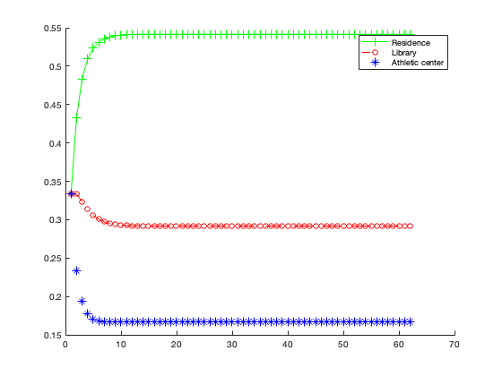

Contents
Part 1, computing steady state
disp('A16 Steady State Vector Calculated With P^k')
initialdistro=[0.3;0.5;0.2];
initialdistro=initialdistro./norm(initialdistro,1);
P=[0.8 0.3 0.3;
0.1 0.6 0.1;
0.1 0.1 0.6];
Airport=[];
Train=[];
City=[];
Airport=[Airport initialdistro(1)];
Train=[Train initialdistro(2)];
City=[City initialdistro(3)];
for i=1:500
finaldistro=(P^i)*initialdistro;
if (finaldistro-P*finaldistro)<1e-15
break;
end
Airport=[Airport finaldistro(1)];
Train=[Train finaldistro(2)];
City=[City finaldistro(3)];
end
steady_state_vector_probability = finaldistro
disp('Diagonalization of A16')
[V D] = eig(P);
temp = V;
temp(temp==0) = inf;
colmin = min(abs(temp),[],1);
V = V./colmin
D
Eigenvectors1 = P-eye(3);
Eigenvectors2 = P-(1/2).*eye(3);
rref(Eigenvectors1);
rref(Eigenvectors2);
diagcheck = V*D*inv(V)
A16 Steady State Vector Calculated With P^k
steady_state_vector_probability =
0.6000
0.2000
0.2000
Diagonalization of A16
V =
3.0000 2.0000 -1.0000
1.0000 -1.0000 -1.4780
1.0000 -1.0000 2.4780
D =
1.0000 0 0
0 0.5000 0
0 0 0.5000
diagcheck =
0.8000 0.3000 0.3000
0.1000 0.6000 0.1000
0.1000 0.1000 0.6000
Part 2, where we recalculate the steady state with VDV^-1
disp('A16 Steady State Vector Calculated With Diagonalization')
Residence=[];
Library=[];
Athletic=[];
Residence=[Residence initialdistro(1)];
Library=[Library initialdistro(2)];
Athletic=[Athletic initialdistro(3)];
for i=1:500
finaldistro=(P^i)*initialdistro;
if (finaldistro-P*finaldistro)<1e-15
break;
end
Residence=[Residence finaldistro(1)];
Library=[Library finaldistro(2)];
Athletic=[Athletic finaldistro(3)];
end
steady_state_vector_probability = finaldistro
A16 Steady State Vector Calculated With Diagonalization
steady_state_vector_probability =
0.6000
0.2000
0.2000
Part 3 when there is a new question (B15)
disp('B15 Steady State Vector Calculated With P^k')
initialdistro=[200;200;200];
initialdistro=initialdistro./norm(initialdistro,1);
P=[0.8 0.2 0.3;
0.1 0.7 0.2;
0.1 0.1 0.5];
Residence=[];
Library=[];
Athletic=[];
Residence=[Residence initialdistro(1)];
Library=[Library initialdistro(2)];
Athletic=[Athletic initialdistro(3)];
for i=1:500
finaldistro=(P^i)*initialdistro;
if (finaldistro-P*finaldistro)<1e-15
break;
end
Residence=[Residence finaldistro(1)];
Library=[Library finaldistro(2)];
Athletic=[Athletic finaldistro(3)];
end
steady_state_vector_probability = finaldistro
disp('Diagonalization of B15')
[V D] = eig(P);
Eigenvectors1 = P-eye(3);
Eigenvectors2 = P-(0.6).*eye(3);
Eigenvectors3 = P-(0.4).*eye(3);
rref(Eigenvectors1)
rref(Eigenvectors2)
rref(Eigenvectors3)
temp = V;
temp(temp==0) = inf;
colmin = min(abs(temp),[],1);
V = V./colmin
diagcheck = V*D*inv(V)
B15 Steady State Vector Calculated With P^k
steady_state_vector_probability =
0.5417
0.2917
0.1667
Diagonalization of B15
ans =
1.0000 0 -3.2500
0 1.0000 -1.7500
0 0 0
ans =
1.0000 1.0000 0
0 0 1.0000
0 0 0
ans =
1.0000 0 0.5000
0 1.0000 0.5000
0 0 0
V =
1.0e+15 *
-0.0000 -5.3033 -0.0000
-0.0000 5.3033 -0.0000
-0.0000 0.0000 0.0000
Warning: Matrix is close to singular or badly scaled. Results may be inaccurate.
RCOND = 1.616246e-16.
diagcheck =
0.8000 0.2000 0.3000
0.1000 0.7000 0.2000
0.1000 0.1000 0.5000
Part 3, but redoing the calculations with diaganalization
disp('B15 Steady State Vector Calculated With Diagonalization')
Residence=[];
Library=[];
Athletic=[];
Residence=[Residence initialdistro(1)];
Library=[Library initialdistro(2)];
Athletic=[Athletic initialdistro(3)];
for i=1:500
finaldistro=(P^i)*initialdistro;
if (finaldistro-P*finaldistro)<1e-15
break;
end
Residence=[Residence finaldistro(1)];
Library=[Library finaldistro(2)];
Athletic=[Athletic finaldistro(3)];
end
steady_state_vector_probability = finaldistro
hold on
plot(Residence,'g+-')
plot(Library,'ro--')
plot(Athletic,'b*')
legend('Residence','Library','Athletic center')
B15 Steady State Vector Calculated With Diagonalization
steady_state_vector_probability =
0.5417
0.2917
0.1667
